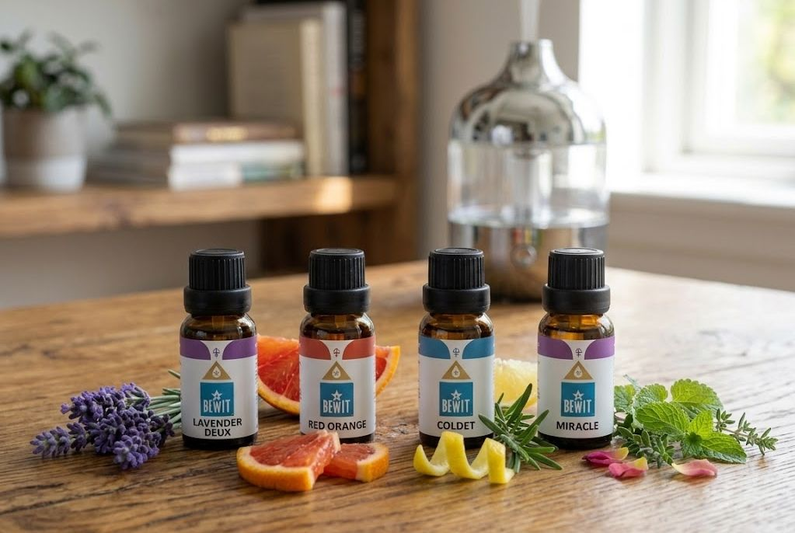

Jako registrovaný zákazník BEWIT můžete nakupovat se slevou až 50 % na vybrané produkty. Registrace je zdarma a nezavazuje vás k ničemu.
Registrace u BEWIT zdarma →
česká kvalita, které věřím
Z vlastní zkušenosti, osobního setkání s majitelem a každodenního používání. Přečtěte si, proč jsem si vybrala právě BEWIT a proč ho doporučuji i vám.

Když jsem před pár lety poprvé objevila esenciální oleje BEWIT, netušila jsem, že se stanou součástí mého každodenního života. Dnes je používám každý den — a nikdy jsem toho nelitovala.
BEWIT pochází z Ostravy a je to česká firma, za kterou stojí skuteční lidé s jasnou vizí: příroda bez kompromisů. Jejich oleje jsou 100% přírodní, bez jakékoliv chemie. Žádné příměsi, žádné náhražky — jen čistá příroda.
Byl to osobní zážitek. Měla jsem možnost navštívit jejich zázemí, projít sklady a výrobu a potkat přímo majitele firmy, který nám vše ukázal s otevřeností, která je dnes vzácná. Viděla jsem vlastní laboratoř, kde každý olej prochází kontrolou kvality. To pro mě bylo rozhodující.
BEWIT nedoporučuji proto, že musím — doporučuji ho proto, že mu věřím.
„Je naší povinností stát se lepšími lidmi. Bez lepších lidí nebude lepší svět."
Ing. Jiří Černota, zakladatel a generální ředitel BEWIT Natural Medicine, s.r.o.
BEWIT = BE WITH IT — tedy „Buďte s tím — se svým vnitřním Zdrojem, Esencí a s Bohem." Název firmy není náhoda — odráží filozofii, se kterou jsou oleje vyráběny a nabízeny.
Pro sledování, kontrolu a vyhodnocování kvality vyvinula firma BEWIT vlastní systém norem a protokolů CTEO — Certified Therapeutic Essential Oils. Prioritou je nejvyšší kvalita — proto vybudovala světově unikátní špičkové laboratoře pro analýzu složení esencí.
BEWIT při výrobě používá destilaci jemným a šetrným způsobem při nízkých teplotách — kombinuje historické poznatky s moderními technologiemi. Cílem je maximální množství účinných přírodních bioaktivních látek.
Plynová chromatografie a hmotnostní spektrometrie — zjišťuje přesné složení, odhaluje příměsi i těžké kovy
Mikrobiální testování — kontrola přítomnosti nebezpečných látek: kvasinky, viry, bakterie a plísně
Senzorické testování — chutí, pohledem, dotekem, vůní a intuicí těch nejlepších odborníků
Firma nepoužívá ve svých výrobcích nanotechnologie a netestuje výrobky na zvířatech
Společnost navázala na tisíciletou tradici využívání pyramidální energie a vyvinula vlastní postupy a technologie označované jako BEWIT PYRAMIDIZED — pro výrazné zlepšení vlastností, kvality, trvanlivosti a účinnosti produktů.
Na všechny firemní procesy jsou trvale aplikovány principy Kaizen — japonská metoda, kde je na prvním místě kvalita. Soustavné vzdělávání, budování vědecké databáze a využívání nejmodernějších vědeckých poznatků jsou nedílnou součástí firmy.
Jako registrovaný zákazník BEWIT můžete nakupovat se slevou až 50 % na vybrané produkty. Registrace je zdarma a nezavazuje vás k ničemu.
Registrace u BEWIT zdarma →